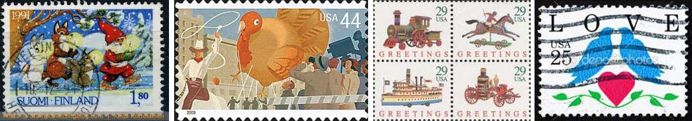
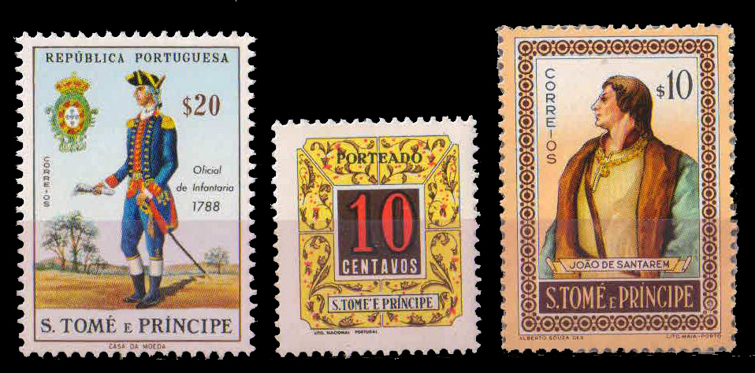
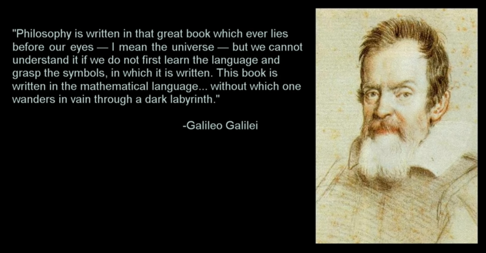
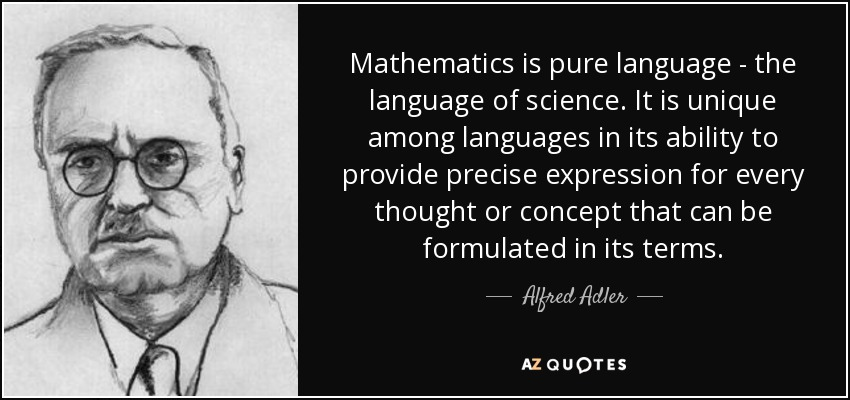
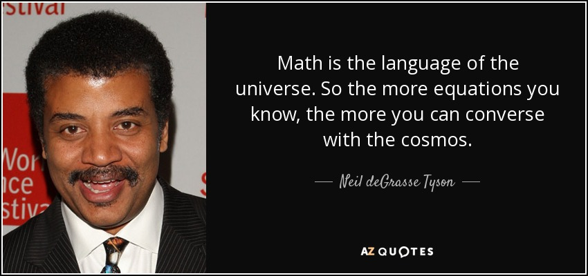

ENGLISH
Shiv has 4 stamps. His friend gave him 3 stamps. How many stamps does Shiv have in all?
FRENCH
Shiv a 4 timbres. Son ami lui a donné 3 timbres. Combien de timbres Shiv a-t-il en tout?
MATHS
4x + 3x = ?
Just like any other language can be translated into another language similarly, anything could be translated into Math, its a language of the universe and we have seen that things that cannot be described alphabetically have been described mathematically. Math is also a language with a huge set of vocabulary including English, Numbers, and Greek letters. It is the language of generalization.
This was translation but now moving toward solutions, any math operation(like Add or Sub) can be only solved when things are of the same kind.
 
Looking at the above example, 4x + 3x can also be written as:
4 stamps + 3 stamps
Which meant 4 of some item x added with 3 of some item x, where x is the same kind of thing which abides our rule that "mathematical operation can only be done at same kind".
That also meant 4 stamps + 3 stamps = 7 stamps.
But what if...
Shiv has 4 stamps. His friend gave him 2 stamps and 3 letters.
So the maths for this will be:
4 stamps + 2 stamps + 3 letters
4x + 2x + 3y
6x + 3y
So you can see the things with same kind gets add up as stamps but letters are simply like that. Similarly,
Chidanand takes 4 hours to do a job and 30 minutes to do another job, so what is the total time he took to do both jobs?
4 hours + 30 minutes
430 minutes
430 hours
34 hours
34 minutes
34 hoursminutes
So we see two time measurement units which are in a different kind so we can add them, to add them we have to bring them to the same kind which is possible in this example i.e minutes-minutes or hours-hours
(4 ✕ 60)minutess + 30 minutes
240minutess + 30 minutes
2700minutess
or
4 hours + (30/60) hours
4.5 hours
Grammer of this Language
Let's look at a little tougher example which can explain the beauty of this math language.
Delphine's father purposed to her that he will give dollars twice the grades what's she gets in her final year as a reward for her hard work in her studies and her mother agrees to give 3 dollars whatever her kids score and this is applied to all siblings in her family.
=>
grades + grades + 3
or generally
x + x + 3
1. Delphine gets 7 grades out of 10, so what sum of money she will receive from his parents as a gift?
=>
x + x + 3
7 + 7 + 3
17 $
What will her sister Stefy receive if she gets 5?
x + x + 3
5 + 5 + 3
13 $
Math has something called equations, formulas, functions, operators, variables, etc. Let's see one by one:
As you can see this x + x + 3 used to describe the reward method of Delphine's family, so this is a Function or you can say the reward function of Delphine's family and functions, formulas, equations are pretty much the same thing.
Now let's explain variables with this example:
Penny works for a restaurant and earns 10$ per hour and also tips within that hour.
So the maths expression for this will be:
10 + tips
The thing with the tips are, it keeps on changing according to mood, environment, and time of costumer like in the morning there are not many customers so tips are pretty low but at noon during lunch or at evening, engagement is high, that times tips are also high.
1. So what total money will Penny get when she worked an hour in the morning and got the tip of 15$?
10 + tips
10 + 15
25 $
2. And next she earned 40$ tips for working an hour in the evening that same day, so tell me the amount she earned in the evening?
10 + tips
10 + 40
50 $
So variables are like placeholders which are used to keep the place of a value in an equation, formula, or a function that keeps on changing every time, in this example, it was "tips".
Operators
We have already familiar with +,- as it is used for addition or subtraction to the right of the neighboring element, but with this equal sign = we still have some ambiguity as it has mostly misunderstood as "to do" operation and this has mainly come from calculators where we insert some operations and hit = to get results whereas it only means "the same value" or in general left side expression is same as the right side.
Reference
- Students' understanding of the equal sign not equal, professor says
- An Analysis of Misunderstanding in Mathematics: The Case of Meanings of Equal Sign
- The equal sign problem



If you remember this example from my last blog "Math as a language".